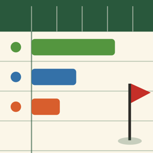

落とした打数が分かるゴルフスコア
どこで打数を落としたかが、3本の帯で分かるゴルフのスコア。iPhone と iPad のアプリです。
1ホールを「グリーンまで」「パット」「罰打」の3つの数で入れます。グリーンまではパー−2打（パーオン）と、パットは2パットと比べ、罰打はそのまま落とした打数にします。3つを足すと、そのホールのパーとの差にぴったりなります。ラウンドのあとは「パー＋14 ＝ グリーンまで ＋8・パット ＋4・罰打 ＋2」のように見せ、最近5ラウンドをならして「次に練習するのは」を1つ出します。
- はじめはパーの数（パー4 なら 2・2・0）が入っているので、ちがった所だけ −／＋ で直して「次のホールへ」を押すだけです
- コースの登録もログインもいりません。コース名と各ホールのパーを1回入れれば、次から選べます
- 1〜18ホールのどれでも入れられます。ハーフでも、ショートコースでも、途中でやめても「ここで終える」で終えられます
- 同伴者は名前と打数だけ。入れなくても進めます。よく一緒に回る人が上に並びます
- 紙のスコアカードの表（OUT・IN・合計、パット・罰打・同伴者）。フェアウェイ・バンカーも記録できます（入れなくてもかまいません）
- ラウンドごとの落とした打数のグラフ、パーオン・フェアウェイの割合、コースごとのいちばんよい打数。CSV で書き出せます
- 課金はありません。位置情報は使いません。インターネットにつながっていなくても使えます。画面のいちばん下に小さな広告が出ます（画面いっぱいの広告・動画の広告は出ません）